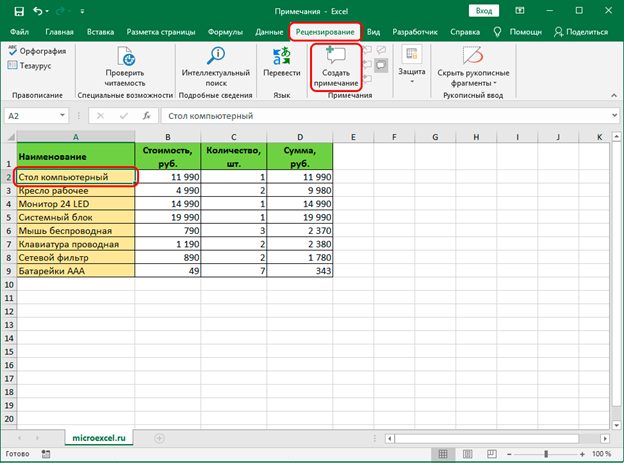
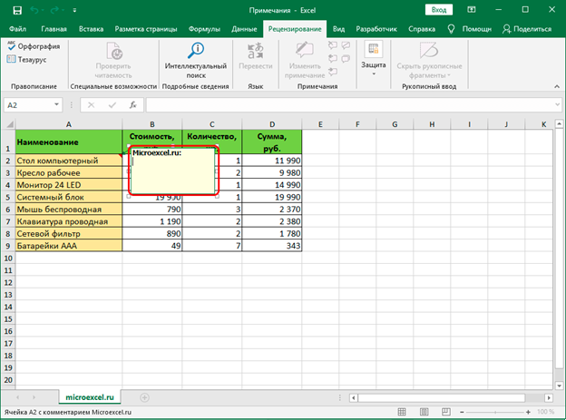
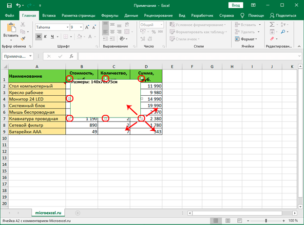
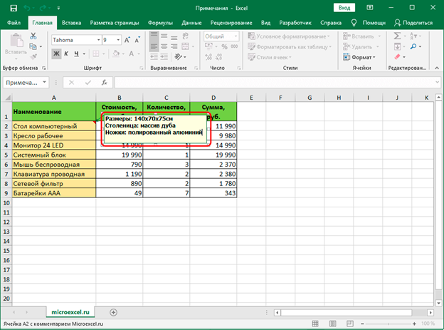
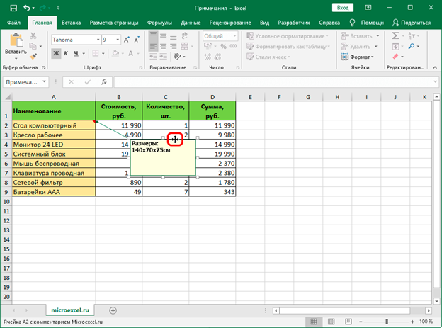
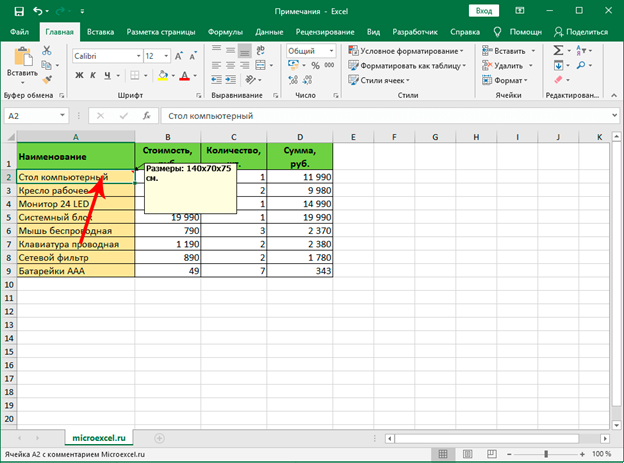
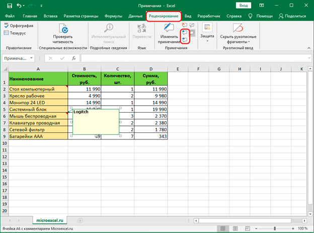
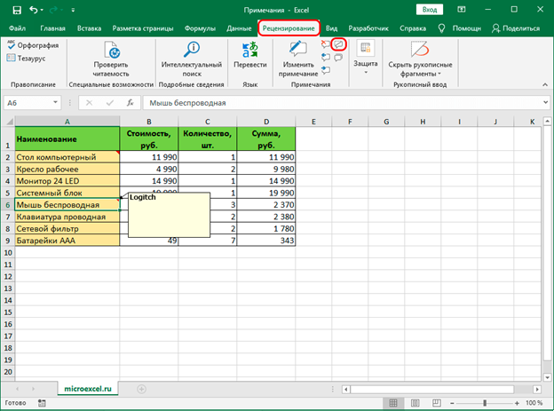

Microsoft Office Exel
Альтернативный способ создания примечания:
1. Переходим в ячейку (кликаем по ней мышью), для которой хотим добавить примечание. Переключаемся во вкладку “Рецензирование”, где жмем кнопку “Создать примечание”, которая находится в группе “Примечания”.

2. Появится поле для ввода комментария. Дальнейшие действия аналогичны тем, что мы уже рассмотрели ранее.

Примечание: Если добавленный комментарий занимает слишком много места и не помещается в стандартном поле примечания, его границы можно расширить. Для этих целей можно воспользоваться одной из 8 точек, расположенных по периметру (4 по углам и 4 – в середине сторон). Зажав левую кнопку мыши, тянем одну из точек, тем самым растягивая область примечания.

В результате мы получим область большего размера, в которой, соответственно, может отобразиться больше полезной информации. Аналогичным образом можно сжать границы примечания, если лишнее пространство больше не нужно.

Для того, чтобы изменить местоположение примечания, наводим курсор на любую границу поля с ним (например, верхнюю). Когда курсор сменит вид на четыре стрелки в разные стороны, зажав левую кнопку мыши перемещаем область примечания в нужное место.

Просмотр
1. Чтобы увидеть содержимое примечания достаточно просто навести указатель мыши на ячейку с ним, и оно автоматически всплывет. Нажимать на какие-либо кнопки и значки в данном случае нет необходимости. Чтобы завершить просмотр примечания, просто перемещаем курсор за пределы ячейки с ним.
2. Если в таблице несколько примечаний, для переключения между ними можно пользоваться кнопками “Следующие” и “Предыдущие”, которые находятся во вкладке “Рецензирование”.

3. В этой же вкладке (“Рецензирование”) можно включить видимость примечаний, чтобы они постоянно отображались независимо от положения указателя мыши:
• кнопка “Показать или скрыть примечание” – отвечает за видимость примечания конкретной ячейки.

• с помощью кнопки “Показать все примечания” можно, соответственно, сделать видимыми все примечания.
• повторное нажатие этих кнопок скроет примечания.
^ Наверх